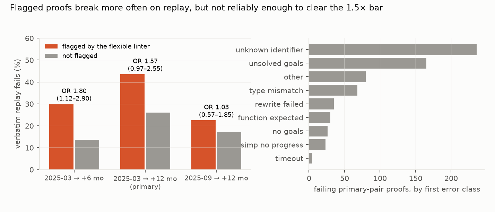

Verdict: H1 Inconclusive.
- H1 (flagged proofs fail on 12-month replay with odds at least 1.5 times unflagged ones): Inconclusive.
- Flagged proofs fail 43.6% of the time against 26.0% for unflagged ones.
- Adjusted for tactic count and simp-call count, with clustering by file, the odds ratio is 1.57 (95% 0.97 to 2.55; p = 0.07).
- Population: 2,488 proofs in 1,203 files, of which 110 are flagged. These numbers are corrected after review: the
first draft counted 231 terminal
simpcalls with a multi-line argument list as non-terminal (OR 1.48, 0.92 to 2.39 on 2,723 proofs). - The adjustment matters. The unadjusted odds ratio is 2.20, and with an independence working correlation the adjusted ratio is 1.70 (1.01 to 2.85).
- The direction is consistent in the first year, not in the second pair:
- six months later: OR 1.80 (1.12 to 2.90), with 30% against 14% failing;
- setting aside failures whose only error is an unknown identifier (a removed or renamed name): OR 1.73 (1.07 to 2.77);
- the second pair (September 2025 to September 2026): OR 1.03 (0.57 to 1.85). Its flagged proofs are what was left after mathlib adopted the linter and rewrote nearly every flagged proof (below), so this is not a replication.
- Mathlib had already rewritten almost every flagged proof.
- Between the two snapshots, mathlib changed the body of 109 of 110 flagged proofs (99%), against 1,195 of 2,378 unflagged ones (50%). The linter entered mathlib's defaults during that year.
- This does not bias H1: failure depends only on the old body and the new library.
- The first draft also reported that "proofs whose text mathlib left alone never fail", which is true by construction (such a body is the new file's own). It is withdrawn.
- How proofs rot (first reported error of the 667 failing proofs; corrected after review):
- unknown identifier, a removed or renamed name (32%);
- type mismatch (11%), unsolved goals (6%), rewrite failed (5%), "function expected" (4%, typically a changed signature), simp made no progress (2%), no goals (1%) and timeouts (4 proofs);
- other messages (37%).
- The linter's own failure modes are rare among flagged failures. The two classes its rationale predicts are
simp making no progress and a rewrite pattern no longer found. They are the first error for 2 of 48 failing
flagged proofs (4%), against 47 of 619 unflagged ones (8%). The first draft's patterns missed both classes
entirely, because newer Lean writes "
simpmade no progress" and "Did not find an occurrence of the pattern".
- The pipeline is valid. In the old snapshot, 99.94% of population proofs compile without error.
In plain terms
Mathlib is a huge, shared library of formally verified mathematics written in the Lean proof assistant. Its proofs
must keep compiling as the library changes, and when the library changes, some proofs break. Mathlib has a style
check, the "flexible linter", based on the belief that a common pattern is fragile: an automatic simplification
step (simp) followed by a precise step that depends on exactly what simp produced. If simp changes, the
precise step breaks.
We tested that belief by taking about 2,500 proofs from March 2025 and pasting them, unchanged, into the March 2026 library wherever the theorem itself was unchanged. Proofs the style check had warned about broke more often: 44% against 26%. After allowing for proof length, the odds of breaking were about one and a half times higher. That is close to what was predicted, but the uncertainty is wide enough that we can't confirm it, and a second year-long comparison showed no difference.
So the style rule points the right way, but its effect is modest next to the most common reason proofs break: names, usually lemmas, being renamed or removed. And the flagged proofs that broke rarely did so in the way the rule's rationale describes.
What was asked
The lead (formal-math-mathlib-proof-rot-flexible-linter) asked whether proofs that mathlib's FlexibleLinter flags
break more often when replayed in a later library. Its prediction was an odds ratio of at least 1.5.
The linter's docstring asserts this, and the style guide's "non-terminal simp should be simp only" rule rests on it. No replay measurement was found. Related work covers Isabelle/AFP version compatibility (TOSEM 2025) and LLM proofs across Lean versions (arXiv 2605.20244).
How it was done
- Snapshots (depth-1 checkouts with prebuilt olean caches):
- primary: O =
9bed6a56(2025-03-31) and N =08fd1302(2026-03-31); - secondary: O₂ =
bb6ed240(2025-09-30), which is also O + 6 months, and N₂ =2a885768(2026-09-30).
- primary: O =
- Declarations.
theoremandlemmacommands with tactic proofs, from a line-based parser, unit-tested.- Features: tactic count, simp-call count, and non-terminal unrestricted
simp(notsimp only, not the last tactic of its block). - Population: proofs with at least one non-terminal unrestricted simp, whose file exists at the same path later
with a declaration of the same name and identical statement text. A more-indented line after
simp [...,is a continuation of the same call (corrected after review). Four declarations with a comment before:= byare dropped, because their replayed bodies were extracted at a shifted offset.
- Features: tactic count, simp-call count, and non-terminal unrestricted
- Flag. Each population file was compiled in O with the flexible linter enabled (
-Dweak.linter.flexible=true). The linter module is injected for O, whoseInitdoes not import it (D1). A declaration is flagged if a warning falls in its span. - Replay. O's proof bodies were substituted into N's file and the file compiled with
lake env lean(30-minute limit). A proof fails if any error falls in its span. 14 files were compiled in parallel. - Model. Logistic GEE, fail ~ flagged + log(tactics) + simp calls, exchangeable correlation within file.
Results (results/figures/F1_rot.png)


| comparison | proofs (flagged) | fail: flagged / unflagged | odds ratio (95% CI) |
|---|---|---|---|
| 2025-03 → 2026-03 (primary) | 2,488 (110) | 43.6% / 26.0% | 1.57 (0.97–2.55) |
| primary, excluding failures whose only error is an unknown identifier | 2,488 (110) | 41.8% / 23.3% | 1.73 (1.07–2.77) |
| 2025-03 → 2025-09 (6 months) | 2,854 (130) | 30.0% / 13.5% | 1.80 (1.12–2.90) |
| 2025-09 → 2026-09 (second pair) | 3,566 (115) | 22.6% / 17.1% | 1.03 (0.57–1.85) |
| both 12-month pairs, clustered by file across pairs | 6,054 (225) | 32.9% / 20.7% | 1.45 (1.00–2.10) |
The two 12-month pairs share 2,209 declarations, so the pooled row clusters by file across pairs. The first draft prefixed file names by pair, which counted shared proofs as independent. The second pair's flagged set is post-clean-up, so the pooled row mixes two different populations and is descriptive only.
Error classes of failing primary-pair proofs (667), by the first reported error: other 246, unknown identifier 216, type mismatch 73, unsolved goals 40, rewrite failed 33, function expected 30, simp made no progress 16, no goals 9, timeout 4. By the highest-priority class among all of a proof's errors (the first draft's definition, now with the corrected patterns): unknown identifier 236, unsolved goals 165, other 80, type mismatch 68, rewrite failed 35, function expected 30, no goals 26, simp made no progress 23, timeout 4. The class is read from the first three stored error messages of each proof.
What this does and does not show
- The style rule points the right way in the first year. The six-month comparison and the primary analysis without renamed-lemma failures clear a 1.0 lower bound, but the preregistered primary does not. The second pair shows nothing, but its flagged proofs are the residue after mathlib's clean-up. Flagged proofs are rare (4% of the population), which limits power.
- The mechanism is not visible in the errors. If flagged proofs broke because
simpchanged what it produced, their failures should often be simp making no progress or a rewrite pattern not found. Only 2 of 48 are. Error messages are a coarse proxy, though: a changed simp normal form can also surface as unsolved goals or a type mismatch. - Proof rot is dominated by library churn, not tactic style. Removed or renamed lemmas are the most common identifiable cause. Mathlib's maintainers rewrote about half of the unflagged population, and nearly all flagged proofs, within the year.
- Not shown:
- Causation. Flagged proofs may differ in other ways, such as the areas they sit in.
- Moved files and changed statements, which are excluded.
- Linter coverage. The linter's behaviour and the syntactic feature detection are approximate.
- Comparison with LLM proofs. The lead's Lean-workbook comparison was not run.
Process and deviations
- Preregistration:
plan.md. - Deviations (
deviations.md):- D1, before any population or replay: the
weak.option prefix, linter injection for O, and section parsing; - D2, after the first results: case-insensitive error classes, two added classes and stored messages. This affects
only the error-class composition and the unknown-identifier sensitivity. The first version is
results/tables/primary_v1.json; - D3, after the independent review (post hoc): the multi-line
simpcontinuation, comment-offset declarations, error-class patterns and first-error classes, cross-pair clustering, and the body-change rates. The draft the review saw isresults/tables/primary_v2_pre_d3.json.
- D1, before any population or replay: the
- Independent review: fix first (four moderate findings); the fixes are in D3.
Reproducing it
code/fetch_snap.shfor each of the four commits. This needs elan, and each cache is about 5 GB.code/rot.py decls O Nfor each pair.code/run_all.sh(labelling, then replays).code/analyse.py.code/figures.py.